生命科学研究
细胞培养、微生物扩增、酶反应和样品孵育。
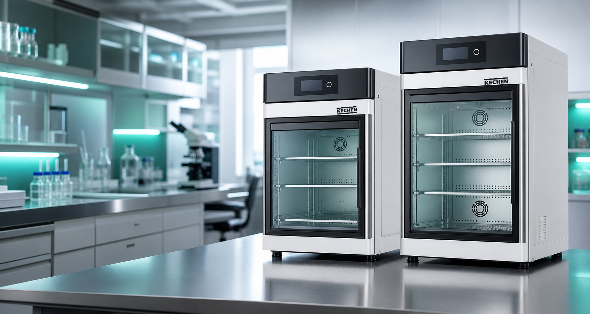
上海科辰实验设备有限公司致力于实验室科研、教育仪器，产品涉及生物、化工、医疗、农业等领域。 科辰以创新技术和可靠品质打造高性价比国产实验设备，服务科研、教学与检测场景。
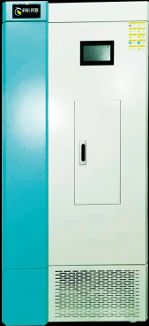
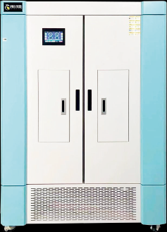
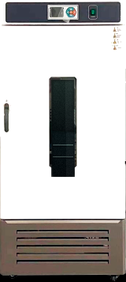
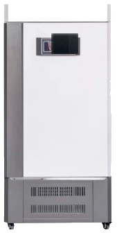
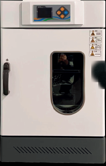
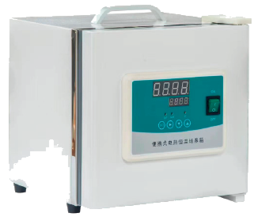
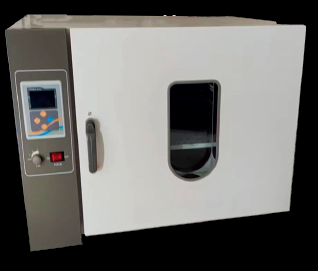
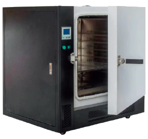
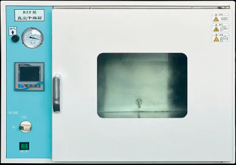
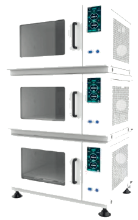
从科研到质控，保持实验环境一致性，减少批次差异对结果的影响。
细胞培养、微生物扩增、酶反应和样品孵育。
稳定性测试、环境监测培养、无菌检查和留样管理。
菌落培养、BOD 测定、水质检测和微生物限度实验。
基础生物实验、课程示范、学生分组培养与设备训练。
根据产品宣传册提炼主力系列，覆盖温湿度、光照、培养、干燥、真空和振荡培养等实验室设备需求。
7 寸触摸屏控制，支持温度、湿度、光照编程，适用于植物栽培、种子发芽、育苗和微生物培养。
面向恒温恒湿试验，具备 30 组时段温湿度编程和不锈钢内胆，适合长期稳定运行。
可模拟光照培养环境，用于植物生长、组织培养、种子发芽、微生物保存和光照试验。
支持温度、湿度、光照多时段编程，适合植物栽培、育苗、组织细胞和微生物培养。
适用于环境保护、卫生防疫、药检、水产、BOD 测定、细菌霉菌培养和样品保存。
适用于工矿企业、科研院所、医药卫生和户外应急等场景的恒温培养与样品存放。
覆盖立式、卧式电热鼓风干燥箱与台式真空干燥箱，用于干燥、烘焙、灭菌和热敏物料处理。
用于细菌培养、发酵、杂交、生化反应、细胞组织研究等对温度和振荡有要求的实验。
实际参数以产品实物与正式技术资料为准。
左右滑动查看完整参数
| 参数 | 人工气候箱 | 恒温恒湿箱 | 生化培养箱 | 振荡培养箱 |
|---|---|---|---|---|
| 温度范围 | 4 至 65°C 无光照 / 10 至 50°C 有光照 | 4 至 65°C | 5 至 50°C | 4 至 60°C |
| 容量/规格 | 450 / 600 / 800 / 1200 L | 450 / 600 / 800 / 1200 L | 50 / 80 / 150 / 250 / 350 L | KC-810/820/830 或 KC-910/920/930 |
| 控制能力 | 温度、湿度、光照编程 | 温度、湿度编程 | 微电脑控温 | 温度、转速、多段程序 |
| 典型指标 | 温度波动 ≤±0.3°C | 湿度波动 ≤±1.5%RH | 温度波动 ≤±1°C | 0-300rpm，精度 ±1rpm |
| 核心选配 | 打印机、4G 远程、CO2、换气 | 打印机、4G 远程、CO2、换气 | 打印机、4G 远程 | 夹具定制、数据导出、紫外灭菌 |
客户可直接下载科辰实验设备产品宣传册 PDF，产品单页或分型号资料后续可咨询获取。
包含企业简介、发展方向，以及人工气候箱、恒温恒湿箱、生化培养箱、干燥箱、真空干燥箱、振荡培养箱等产品介绍。
科辰实验设备服务科研院所、高校、检测机构与农业科研平台。
帮助实验室把设备采购转化为可运行、可维护、可追溯的培养流程。
根据样品类型、温度范围、容量、洁净要求和验证要求确认产品组合。
输出型号建议、选配清单、安装条件和预算级别，支持多实验室部署。
提供安装调试、操作培训、维护计划和常见故障处理指导。
支持温度映射、校准建议、IQ/OQ 文件和生命周期维护记录。
请提交应用场景、温湿度范围、容量、光照、振荡或干燥需求。销售或技术团队可据此整理设备配置、交付周期和预算区间。